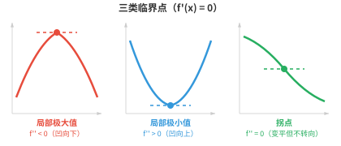
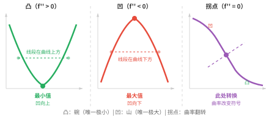
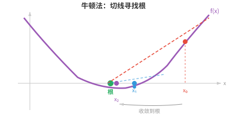
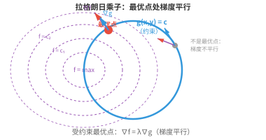

优化（Optimisation）¶
优化是模型训练的数学核心：寻找能使损失函数最小化的参数。本节介绍临界点、凸性、梯度下降、牛顿法、使用拉格朗日乘子的约束优化，以及驱动现代深度学习的优化器 SGD 和 Adam。
- 训练神经网络、拟合回归直线、调整超参数，几乎每一种 ML 算法的核心都是一个优化（optimisation）问题。
大白话
很多机器学习任务归根到底都在反复调参数，直到结果尽可能好；这个“找最好参数”的过程就是优化。
- 我们有一个函数，例如损失、成本或目标函数，并希望找到使它尽可能小，或尽可能大的输入。
大白话
把函数值当作成绩或花费，优化就是找一组输入，让成绩最高或花费最低。
- 在优化前，我们需要理解函数的零点（zeros），也称根。\(f(x)\) 的零点是使 \(f(x) = 0\) 的 \(x\) 值。从图形上看，它们是 x 轴截距。
大白话
零点就是函数输出刚好为 0 的位置，在图上就是曲线碰到或穿过 x 轴的地方。
- 例如，\(f(x) = x^2 - 3x + 2 = (x-1)(x-2)\) 在 \(x = 1\) 与 \(x = 2\) 处有零点。两个零点之间函数为负，即 \(f(1.5) = -0.25\)；零点之外函数为正。零点将数轴分隔成函数符号恒定的区域。
大白话
两个零点像把数轴切成几段；在同一段内，曲线不会再穿过 x 轴，所以正负号保持不变。
- 一个零点的重数（multiplicity）是对应因子出现的次数。
大白话
同一个根在因式分解里重复出现几次，它的重数就是几；重数会改变曲线碰到 x 轴时的行为。
- 在单零点，即重数为 1 的零点，图像穿过 x 轴；在二重零点，即重数为 2 的零点，图像接触 x 轴后反弹而不穿过，看起来在该点是“平的”。
大白话
奇数重根通常让曲线从轴的一侧穿到另一侧，偶数重根则像球碰地后弹回，仍留在同一侧。
- 寻找零点很重要，因为导数 \(f'(x)\) 的零点就是 \(f(x)\) 的临界点（critical points），它们是极大值和极小值的候选点。
大白话
函数可能转头的位置，往往是坡度变成 0 的地方；因此先找导数的零点，就能缩小寻找峰谷的范围。
- 在极大值或极小值处，切线是水平的，即斜率为 0，因此 \(f'(x) = 0\)。
大白话
走到山顶或谷底的那一瞬间，沿路不再继续上升或下降，所以切线会水平。

- 但并非每个临界点都是极大值或极小值。满足 \(f'(x) = 0\) 的点也可能是拐点（inflection point），例如 \(f(x) = x^3\) 的 \(x = 0\)。函数在那里短暂变平，但不会改变方向。
大白话
坡度为 0 只说明暂时平了，不一定真的掉头；\(x^3\) 在 0 处会平着穿过去，前后仍持续上升。
- 二阶导数判别法（second derivative test）可以解决这个问题。对于临界点 \(x = c\)，即 \(f'(c) = 0\)：
大白话
一阶导数找出可疑点，二阶导数再看曲线在那里向上弯还是向下弯，从而区分谷底和山顶。
-
若 \(f''(c) > 0\)：曲线凹向上，形如碗，因此 \(c\) 是局部极小值（local minimum）。
大白话
碗底附近往任何小方向走都会变高，所以中心点是附近最低处。
-
若 \(f''(c) < 0\)：曲线凹向下，形如山丘，因此 \(c\) 是局部极大值（local maximum）。
大白话
山顶附近往任何小方向走都会变低，所以中心点是附近最高处。
-
若 \(f''(c) = 0\)：该判别法无结论，需要使用更高阶导数或其他方法。
大白话
二阶导数为 0 时，曲线可能是平底、平顶或直接穿过去，光靠这一条信息无法下结论。
- 例如，\(f(x) = x^3 - 3x\)。导数为 \(f'(x) = 3x^2 - 3 = 3(x-1)(x+1)\)，所以临界点为 \(x = -1\) 和 \(x = 1\)。二阶导数为 \(f''(x) = 6x\)。在 \(x = -1\)：\(f''(-1) = -6 < 0\)，为局部极大值；在 \(x = 1\)：\(f''(1) = 6 > 0\)，为局部极小值。
大白话
先由一阶导数找到两个平坦点，再用二阶导数的正负判断：左边是峰，右边是谷。
- 若函数图像上任意两点之间的线段都位于图像上方或图像上，函数就是凸函数（convex）。可以把它理解为处处向上弯曲的碗状函数。从数学上说，若对所有 \(x\) 都有 \(f''(x) \geq 0\)，则 \(f\) 是凸函数。
大白话
凸函数像没有坑洼的碗：把曲线上两点拉直线，直线不会钻到曲线下方；二阶导数非负就是这种向上弯的数学描述。

- 凸性很强大，因为凸函数有一项重要性质：每个局部极小值也都是全局最小值（global minimum）。不存在会使人误入的局部低谷。将球放入一个凸碗中，它总会滚到底部。
大白话
凸碗只有一个真正的最低层，不会有“看起来到底了其实旁边还有更低坑”的陷阱，所以优化更容易。
- 若 \(-f\) 是凸函数，则 \(f\) 是凹函数（concave），即向下弯曲。函数在凹与凸之间转换的点称为拐点，满足 \(f''(x) = 0\)。
大白话
把凸函数上下翻转就得到凹函数；凹凸转换处是曲线从像碗变成像山丘、或反过来的位置。
- 牛顿法（Newton's method）利用切线寻找函数的零点，并可进一步寻找其导数的临界点。从初始猜测 \(x_0\) 出发，迭代更新：
大白话
牛顿法每次用当前位置的切线代替真实曲线，再把切线碰到 x 轴的位置当成下一次猜测。

- 其思想是：在 \(x_n\) 处画出切线，找到切线与 x 轴的交点，将该交点作为 \(x_{n+1}\)。对于性质良好且初始点合适的函数，牛顿法收敛很快，具有二次收敛速度，即每一步正确数字的数量大致翻倍。
大白话
当起点已经不差且曲线平滑时，切线会非常准确地指向根，因此每一步常能大幅提高精度。
- 例如，求 \(\sqrt{5}\)，即求 \(f(x) = x^2 - 5\) 的零点。\(f'(x) = 2x\)，因此 \(x_{n+1} = x_n - \frac{x_n^2 - 5}{2x_n}\)。从 \(x_0 = 2\) 开始：\(x_1 = 2.25\)，\(x_2 = 2.2361\ldots\)，已经精确到四位小数。
大白话
用 2 当起点，只迭代两次就几乎得到 \(\sqrt{5}\)，展示了牛顿法在条件合适时的速度。
- 若初始猜测离根太远、根附近 \(f'(x) = 0\)，或函数附近有拐点，牛顿法可能失败。它还要求计算导数，而导数计算可能很昂贵。
大白话
牛顿法快不等于总稳：起点差、切线太平或形状复杂时，它可能跳到错误位置，且每步还要付出求导成本。
- 对优化，即寻找极小值而非零点，我们将牛顿法应用于 \(f'(x) = 0\)，得到更新公式：
大白话
要找谷底，就把“坡度为 0”当成新的求根问题，再让牛顿法去解它。
- 在多维情形下，它变为 \(\mathbf{x}_{n+1} = \mathbf{x}_n - H^{-1} \nabla f(\mathbf{x}_n)\)，其中 \(H\) 是海森矩阵。这正是上一节二阶泰勒逼近的实际应用：将函数近似为二次函数，直接跳到该二次函数的最小值，然后重复。
大白话
多维牛顿法同时看下坡方向和地形弯曲，用海森矩阵校正步幅和方向，像根据整个碗的形状直接猜谷底在哪里。
- 拉格朗日乘子（Lagrange multipliers）用于解决约束优化（constrained optimisation）：在约束 \(g(x, y) = c\) 下寻找 \(f(x, y)\) 的最优值。我们不再搜索整个 \(\mathbb{R}^n\)，而只在满足约束的集合，即一条曲线或一个曲面上搜索。
大白话
有约束时不能在所有地方随便找最优解，只能在允许的路线或表面上活动，例如预算固定时如何把收益做大。
- 核心洞见来自几何：在受约束的最优点，\(f\) 的梯度必须与 \(g\) 的梯度平行。若不平行，我们还能沿约束面朝某个仍能改进 \(f\) 的方向移动，因此尚未到达最优点。
大白话
在可走边界上真正到头时，想让目标继续变好的方向必然会把你推离约束；两个梯度平行正是这种“已经无路可改进”的标志。
- 引入新变量 \(\lambda\)，即拉格朗日乘子，并定义拉格朗日函数（Lagrangian）：
大白话
\(\lambda\) 是把“目标要变好”和“约束必须满足”绑进同一个公式的调节量。
- 将所有偏导数设为零，可得到一个方程组，其解就是受约束的最优点：
大白话
对 \(x\)、\(y\) 和 \(\lambda\) 都求导并令其为零，一次性同时要求目标在允许方向上不能再改善、约束也必须成立。

- 例如，在 \(x^2 + y^2 = 1\) 的约束下最大化 \(f(x,y) = x^2 y\)。拉格朗日函数为 \(\mathcal{L} = x^2 y - \lambda(x^2 + y^2 - 1)\)。计算偏导数：
大白话
这里所有候选点都被限制在单位圆上，拉格朗日函数把“待求最大值”和“必须在圆上”合成一个问题。
- 由第一个方程，假设 \(x \neq 0\)，可得 \(\lambda = y\)。代入第二个方程：\(x^2 = 2y^2\)。再结合约束：\(2y^2 + y^2 = 1\)，所以 \(y = \frac{1}{\sqrt{3}}\)。最大值为 \(f = \frac{2}{3\sqrt{3}}\)。
大白话
解法是在方程组里逐步消去未知量，最后再把结果代回约束和目标函数，得到边界上能达到的最大值。
- 对于不等式约束，即 \(g(x,y) \leq c\) 而非 \(= c\)，Karush-Kuhn-Tucker（KKT）条件推广了拉格朗日乘子法。约束要么是活跃的，即紧约束，按等式处理；要么是不活跃的，即解在内部，约束与结果无关。
大白话
不等式限制有两种状态：最优解正好顶在边界上时它会产生作用；解离边界还有余量时，这条限制暂时不影响答案。
- 实践中，我们很少手工做优化。主要的算法类别如下：
大白话
真实问题的参数太多，通常由优化器自动迭代；区别主要在于每步用了多少地形信息、每步成本多高。
-
一阶方法（first-order methods），只使用梯度：梯度下降、随机梯度下降（SGD）、Adam。它们每步开销低，但可能收敛缓慢，尤其是在病态问题上。
大白话
一阶方法只看当前下坡方向，算得便宜，适合大规模训练；但遇到狭长或扭曲的地形时，可能需要很多步。
-
二阶方法（second-order methods），使用梯度和海森矩阵：牛顿法收敛很快，但计算和求逆海森矩阵代价高，对 \(n\) 个参数的复杂度为 \(O(n^3)\)。拟牛顿法（Quasi-Newton methods），如 BFGS 和 L-BFGS，只用梯度信息近似海森矩阵，在不承担完整二阶方法成本的情况下，收敛通常快于一阶方法。
大白话
二阶方法还看地形弯曲，常能少走弯路，但完整海森矩阵在大模型中贵得难以承受；拟牛顿法是在速度和成本之间折中。
-
共轭梯度法（conjugate gradient）：适用于大型稀疏系统，只使用矩阵与向量的乘积，而无需存储完整海森矩阵。
大白话
当矩阵巨大但大部分元素为零时，共轭梯度法避免把整张表摊开，只通过矩阵乘向量来逐步逼近解。
-
高斯-牛顿法（Gauss-Newton）和 Levenberg-Marquardt：针对最小二乘问题，常见于回归，通过雅可比矩阵近似海森矩阵。
大白话
对“预测和真实值差多少”的最小二乘问题，可以用雅可比矩阵近似曲率，得到比普通梯度法更有方向感的更新。
-
自然梯度下降（natural gradient descent）：使用费舍尔信息矩阵考虑参数空间的几何结构，对概率模型可能更有效。
大白话
自然梯度不只按参数数值的距离走，还考虑参数改动对概率分布真正造成的变化，因此在概率模型中方向可能更合适。
- 优化器的选择取决于问题。对于深度学习，参数数目极大，可达数百万到数十亿，计算海森矩阵并不现实，因此一阶方法，尤其是 Adam，占主导地位。对于较小且目标平滑的问题，二阶方法可能快得多。
大白话
没有永远最好的优化器：大模型优先选每步便宜的一阶方法，小而平滑的问题才更有条件承受二阶方法的高成本来换速度。
编程任务（使用 CoLab 或 notebook）¶
-
实现牛顿法，求 \(\sqrt{7}\)，即 \(f(x) = x^2 - 7\) 的零点。观察其快速收敛。
-
使用梯度下降最小化 \(f(x, y) = (x - 3)^2 + (y + 1)^2\)。最小值位于 \((3, -1)\)。尝试不同的学习率。
import jax import jax.numpy as jnp def f(params): x, y = params return (x - 3)**2 + (y + 1)**2 grad_f = jax.grad(f) params = jnp.array([0.0, 0.0]) lr = 0.1 for i in range(20): g = grad_f(params) params = params - lr * g if i % 5 == 0 or i == 19: print(f"step {i:2d}: ({params[0]:.4f}, {params[1]:.4f}) loss={f(params):.6f}") -
用数值方法求解一个约束优化问题。在 \(x + y = 10\) 的约束下最大化 \(f(x,y) = xy\)：令 \(y = 10 - x\)，再寻找单变量函数的最优值。
import jax import jax.numpy as jnp # Substitute constraint: y = 10 - x, so f = x(10 - x) = 10x - x² f = lambda x: x * (10 - x) df = jax.grad(f) # Gradient ascent (we want maximum, so add gradient) x = 1.0 lr = 0.1 for i in range(20): x = x + lr * df(x) print(f"x={x:.4f}, y={10-x:.4f}, f={f(x):.4f}") # should be x=5, y=5, f=25